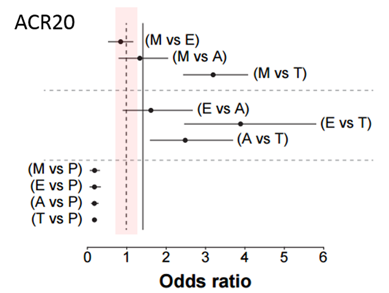
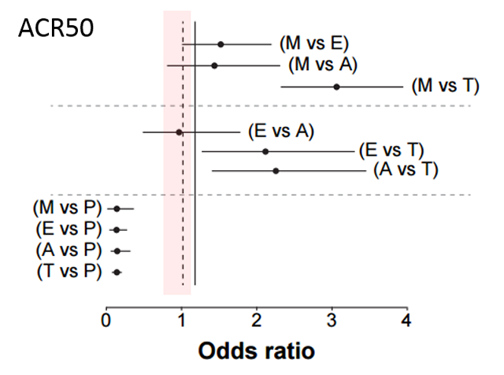
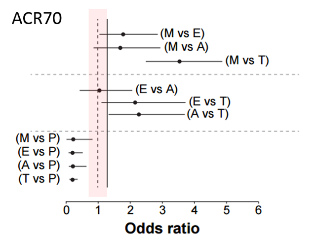

Bio単剤治療時の異なる製剤間でのACR outcomeの比較ではアクテムラが最も高い成績であった
Bio Monotherapyの収集論文をMTC（mixed-treatment comparison analysis）という方法で薬剤間比較を実施



※M:MTX E:ETN A:ADA T:TCZ P:placebo
1に掛かっているものは有意差がない＝ETN・ADAはMTXに有意差がない。ETNとADAも有意差が無い。
アクテムラ単独はMTX・ETN・ADAよりも優位にACR20・50・70改善を得やすい
モノセラピーなら最も有効性が期待できるのはアクテムラである
Alberto Migliore et,al.Therapeutics and Clinical Risk Management 2015:11 1325–1335